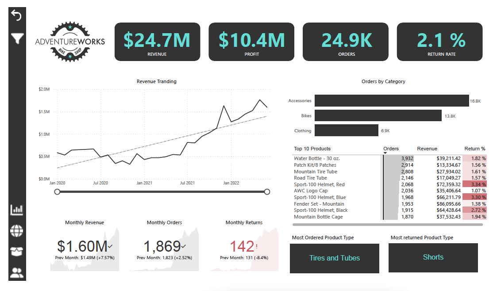
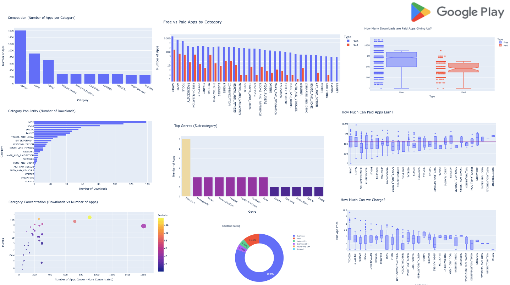
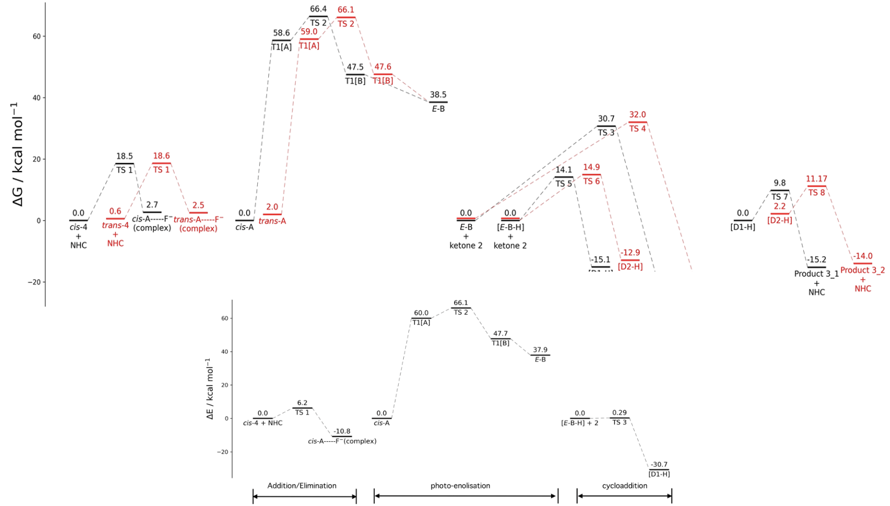
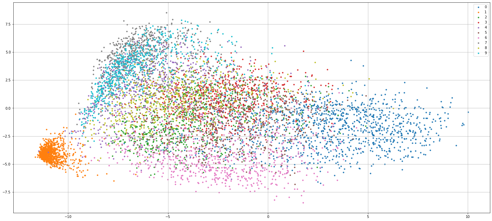
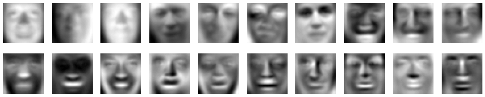

Data Modelling, Cleaning, ETL design & Analysis in SQl, NOSQL,
Amazon RedShift

We model database in three different plateforms (SQL, NOSQL,
Cloud) for a fictitious startup called Sparkify (new music
streaming app) to analyse user behaviour. A complete
implementation of dataset cleaning, analysis, data modelling, ETL
pipelines design in PostgreSQL (psycopg2), NOSQL (Apache
Cassandra), and Amazon RedShift (boto3) to find insights with SQL
queries.
Data Modelling to interactive
dashboard in Power BI

We will help the management team track their KPIs like sales, revenue, profit and returns, compare performance across regions, analyze product-level trends, and identify high-value customers.
we will use Power BI desktop to connect and transform raw data, build a relational data model, create calculated columns and measures with DAX, and finally, design an interactive dashboard to help visualize and analyze the data.
Google Playstore Analysis in Python

Most of us have thought once about building our own an iOS or
Android app. In this work, we will do a comprehensive analysis of
the Android app market by comparing thousands of apps in the
Google Play store.
DengAI: Predicting Disease Spread
The goal of this project, as part of DengAI competition, is to develop a predictive model
that accurately forecasts the total number of dengue fever cases in San Juan and Iquitos based on historical,
climatic, and environmental data.
Graph Neural network (GNN) to predict Atomisation Energy in PyTorch

We investigate the use of Graph NN's to predict atomisation energy
at 0K for molecules with the QM9 dataset so to bypass the use of
network input descriptors so called "symmetry functions" without
providing the explicit atomic positions. For this purpose, we have
used graph convolutional network (GCN) and relational graph
convolutional networks (RGCN)
Data exploration of molecular simulation trajectories

Analysis and visualisation, finding optimal number of clusters
using elbow method and clustering using k-means on molecular
simulation datasets.
Python package to visualise energy profile diagrams of reactions

A user-friendly and robust package giving user an ability to plot
stationary levels with the user-defined parameters, so that one is
not bounded to predefined inputs. It also gives user to save
diagram in any format and user-defined dpi and size.
Visualisation of digit dataset with Principal component analysis
and Linear regression

Analysis and visualisation of digit dataset and decision boundary
via implementing principal componant analysis in 2 subspace and
linear regression
Visualisation of eigenfaces

Visualisation of eigenfaces with implementation of Principal
component analysis in Python